Oyun Motoru Arşivi
Oyun yapmak eğlenceli bir etkinlik, bu işi kolaylaştıracak bir dünya oyun motoru var. Bu yazımı size daha fazla seçenek göstermek ve rehber olabilmek için yazdım. Hedeflediğiniz platforma oyun geliştirebilmeniz için onlarca ücretsiz alternatif var. Sonuçta sizden ücret talep eden popüler oyun motorları kaderiniz değil, hem belki de aklınızdaki oyunu geliştirmek için yeni bir yazılım dili de öğrenmeniz gerekmiyor.
Bu yazıyı okuyan kişisel, eğitimsel veya ticari amaçlarla oyun geliştirecek kişilere önerim, öncelikli olarak platformlara, sonrasında lisanslamaya göre arşive göz gezdirmeleridir.
Başlamadan önce şu bilgiyi vereyim, buradaki bilgiler kütüphane/yazılımların web sitelerinden alındı, fakat bu yazıyı siz gelecekte okuyor olabilirsiniz. Bu yüzden buradaki, en başta lisanslama gibi bilgileri kendiniz teyit etmeden bir işe girişmeyin.
Arşivi okumadan önce, burada geçen bazı kavramlar hakkında kısa bilgiler vermek istiyorum.
Lisans Türleri
Yazılım Türleri
Agar Engine

Tür: Geliştirme Kütüphanesi
Dil: ANSI C
Çıkış Yılı: Bu konuda detaylı bilgi bulamadım. Bulabildiğim en eski tarih 2003 yılı. Halen daha güncel.
Nedir: Agar veya libAgar bir açık kaynak çok platformlu arayüz geliştirme aracıdır. Grafiksel Kullanıcı Arayüzleri oluşturmak için bir dizi kütüphanedir.
Platformlar: Ürettiği uygulamalar X11, Windows, MacOS X, SDL ve buradaki diğer yapılar üzerinde native olarak çalışmaktadır. Ayrıca Framebuffer’lara, SDL ve OpenGL’e de eklenebilir ve bir pencere yöneticisi olarak kullanılabilir.
Lisanslama: BSD
Web Sitesi: http://libagar.org/
Topluluk Sayfası: http://libagar.org/lists.html
Allegro Engine

Tür: Geliştirme Kütüphanesi
Dil: C ve C++ (gcc, clang, MSVC)
Çıkış Yılı: Geçmişinde DOS/DJGPP için çıkan Allegro 2.0’a kadar ilerleyebildim, o da 1996 yılında çıkmış.
Nedir: Allegro multimedia ve oyun programlamayı hedeflemiş çok platformlu bir kütüphanedir. Pencere oluşturma, kullancıdan girdi alma, veri yükleme, grafik çizme, ses oynatma vb. alt seviye işleri halledebilmektedir.
Platformlar: Windows, Linux, Mac OSX, iPhone, Android
Lisanslama: İsteyen herkes ticari amaç dahil olmak üzere kullanabilir, tabi bunun ufak koşulları var buradan bu koşullara ulaşabilirsiniz.
Web Sitesi: https://liballeg.org/
Topluluk Sayfası: https://www.allegro.cc/
Axiom Engine

Tür: 3D Grafik Motoru
Dil: C#
Çıkış Yılı: 2006
Nedir: Axiom 3D Render Motoru tamamen obje yönelimli 3D grafik motorudur. Hedef platform olarak .NET framework kullanmaktadır. OGRE grafik motorunun bir portudur.
Platformlar: DirectX, OpenGL, XNA, Windows, Linux, Android, iPhone, Windows Phone
Lisanslama: LGPL
Web Sitesi: http://axiomengine.sourceforge.net/wiki/index.php/Main_Page
Topluluk Sayfası: http://axiomengine.sourceforge.net/forums/
Catmother Engine
Tür: 3D Grafik Motoru
Dil: C++
Çıkış Yılı: 2002
Nedir: Cat Mother Ltd. Firmasının geliştirdiği motor. Firma kapatılınca motor açık kaynak olarak sunuldu. Ayrıca Dead Justice isimli bir oyunu demo olarak da dunuyorlar web sitesinde.
Platformlar: DirectX9, Windows
Lisanslama: Kaynak kodu BSD, içerik GPL
Web Sitesi: http://catmother.sourceforge.net/
Crystal Space 3D

Tür: SDK
Dil: C++
Çıkış Yılı: 1997
Nedir: 3D uygulamalar geliştirmek için oluşturulmuş bir framework.
Platformlar: Linux, Unix, Windows, Mac OSX
Lisanslama: GNU LGPL
Web Sitesi: https://sourceforge.net/projects/crystal/
Topluluk: https://sourceforge.net/p/crystal/discussion/
Drag[en]gine
Tür: Oyun Motoru
Dil: DragonScript, Smalltalk, Python (Seçilen Scripting modülüne göre)
Çıkış Yılı: 2007
Nedir: Drag[en]gine tam teşekküllü bir oyun motorudur. Ayırt edici özelliği, ilginç bir şekilde yapısı bir işletim sistemine benzemektedir. Modules isimli modülünün bütün fonksiyonelliği aygıt sürücülerilerine bağlıdır. Motor kendi başına system kernel yönetici modülü gibidir, sistemin en alt seviyesindeki kaynaklar kullanılabilir. Bu yüzden geliştirici alt seviye sorunlardan etkilenmeyecektir. Modüller ekleyerek motorun özellikleri değiştirilebilmektedir.
Platformlar: Windows, Linux
Lisanslama: LGPL
Web Sitesi: https://dragengine.rptd.ch/
Topluluk: https://www.moddb.com/engines/dragengine/articles
001 Game Creator

Tür: Oyun Motoru
Dil: Grafiksel
Çıkış Yılı: 2015
Nedir: Geliştiricilerin prototiplerini hızlıca üretebileceği, çapraz platform, tek ve çok oyunculu oyunlar tasarlayabileceği bir oyun geliştirme ortamıdır.
Platformlar: Windows, HTML5, Native Android/iOS
Lisanslama: Commercial
Web Sitesi: https://001gamecreator.com/
Topluluk: https://steamcommunity.com/app/347400
LITIengine

Tür: Oyun Motoru
Dil: Java
Çıkış Yılı: 2017
Nedir: LITIengine bedava, açık kaynaklı ve öğrenmesi basit bir 2D Java oyun motorudur. 2D Fizik Motoru, 2D Render Motoru, 2D Ses Motoru, Partikül Sistemi ve Tiled Map(.tmx) desteği mevcuttur.
Platformlar: Linux, Windows, Mac OSX
Lisanslama: MIT
Web Sitesi: https://litiengine.com/
Topluluk: https://forum.litiengine.com/
Build Engine
Tür: Oyun Motoru
Dil: C
Çıkış Yılı: 1995
Nedir: 3D Realms, Duke Nukem 3D, Blood, Shadow Warrior, Redneck Rampage gibi oyunların yapıldığı oyun motorudur. Build Engine 2D bir grid görünümünde sahte 3D oyunlar oluşturmanıza yardımcı olan bir oyun motorudur.
Platformlar: Linux, Windows, Mac OSX
Lisanslama: Proprietary
Web Sitesi: http://advsys.net/ken/buildsrc/
Topluluk: https://www.moddb.com/engines/build/articles
Tyrano Builder
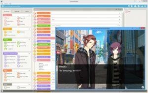
Tür: Grafiksel Roman Motoru
Dil: TyranoScript
Çıkış Yılı: 2015
Nedir: TyranoBuilder ve TyranoScript görsel romanlar oluşturmak için yapılmıuş bir grafiksel roman motorudur.
Platformlar: Windows, Mac OS
Lisanslama: Commercial
Web Sitesi: https://tyranobuilder.com/
Topluluk: https://steamcommunity.com/app/345370
Ren’Py Engine
Tür: Grafiksel Roman Motoru
Dil: Python tabanlı bir script dili
Çıkış Yılı: 2012
Nedir: Ren’Py 2D hikaye oyunları hazırlamak için oluşturulmuş çapraz platform grafiksel roman motorudur. Bu zmaana kadar 1500’ün üzerinde görsel roman, oyun vb çalışmalarda kullanılmıştır.
Platformlar: HTML5, Linux, Windows, Mac OSX, Android, iOS
Lisanslama: MIT
Web Sitesi: https://renpy.org/
Topluluk: https://www.moddb.com/engines/renpy/articles
CopperCube Engine
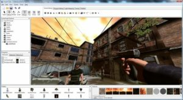
Tür: Oyun Motoru
Dil: JavaScript
Çıkış Yılı: 2014
Nedir: Render için OpenGL, Direct3D, WebGL ve Stage3D kullanabilen çapraz platform, kullanması kolay bir oyun motorudur.
Platformlar: Linux, Windows, Mac OSX, WebGL
Lisanslama: Commercial
Web Sitesi: https://www.ambiera.com/coppercube/
Topluluk: https://www.ambiera.com/forum.php
Bright Engine

Tür: Oyun Motoru, 3D Grafik Motoru
Dil: C++
Çıkış Yılı: 2017
Nedir: Halen geliştirme sürecinde olan, oyun veya animasyon sahneleri oluşturma için kullanılabilecek render motorudur.
Platformlar: Windows, Linux
Lisanslama: Commercial
Web Sitesi: https://gajatixstudios.co.uk/
Topluluk: https://gajatixstudios.co.uk/community/forums
Genesis3D
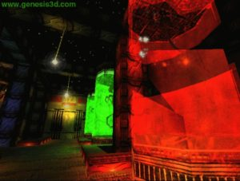 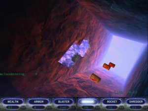
Tür: Oyun Motoru
Dil: C++
Çıkış Yılı: 1999
Nedir: İlk açık kaynaklı oyun ve render motorlarından biridir.
Platformlar: Windows
Lisanslama: Creative Commons
Web Sitesi: http://genesis3d.com/
Topluluk: http://genesis3d.com/forum/
Esenthel Engine

Tür: Oyun Motoru
Dil: C++
Çıkış Yılı: 2008
Nedir: Esenthel ismini Essential(Esas) ve Essence(Esans) kelimelerinden almıştır. Motor geniş bir topluluğa sahip, bu yüzden dokümantasyon ve ders bulmak kolay. Ürettiğiniz içerikleri satabildiğiniz bir Esenther Store’u var. Yapılan çalışmalar genellikle 3D oyunlar.
Platformlar: Linux, Windows, Mac OSX, VR, Web, Mobile
Lisanslama: Commercial
Web Sitesi: http://www.esenthel.com/
Topluluk: https://www.esenthel.com/forum/
LÖVE 2D
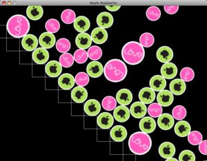
Tür: Geliştirme Kütüphanesi (Framework)
Dil: Lua
Çıkış Yılı: 2008
Nedir: LÖVE, Lua dilinde 2D oyunlar geliştirmenize olanak sağlayan açık kaynaklı bir frameworktür.
Platformlar: Linux, Windows, Mac OSX
Lisanslama: Zlib
Web Sitesi: http://love2d.org/
Topluluk: http://love2d.org/forums/
RPG in a Box Engine

Tür: Oyun Motoru
Dil: Özelleştirilmiş
Çıkış Yılı: 2019
Nedir: 3D grid(*) bazlı, voxel tarzlı RPG ve macera türünde oyun yapmak istiyorsanız, RPG in a Box’ da tam bu iş için yapılmış.
Platformlar: Linux, Windows, Mac OSX
Lisanslama: Commercial
Web Sitesi: https://www.rpginabox.com/
Topluluk: https://steamcommunity.com/app/498310/discussions
ggez

Tür: Geliştirme Kütüphanesi (Framework)
Dil: Rust
Çıkış Yılı: 2015
Nedir: ggez, LÖVE framework yapısında Rust için oluşturulmuş bir hafif, kızlı ve çapraz platform olan bir 2D oyun geliştirme frameworküdür. Bu demektir ki, 2D çizim, ses, kaynak yükleme, olay işleme gibi işlemlerin hepsini yapabilmektedir.
Platformlar: Linux, Windows, Mac OSX
Lisanslama: MIT
Web Sitesi: https://ggez.rs/
Topluluk: https://github.com/ggez/ggez/issues
ENIGMA Development Environment
Tür: Oyun Motoru
Dil: Özelleştirilmiş(EDL, isimli GML ve C++ karışımı bir dil)
Çıkış Yılı: 2007
Nedir: ENIGMA, açık kaynaklı çapraz platform oyun geliştirme ortamıdır. Popüler oyun motoru Game Maker’dan türetilmiştir. LateralGM gibi bir IDE tarafından veya komut satırı arayüzü tarafından(CLI) kullanılabilir.
Platformlar: Linux, Windows, Mac OSX
Lisanslama: GPL
Web Sitesi: https://enigma-dev.org/
Topluluk: https://enigma-dev.org/forums/
nCine Engine
Tür: Oyun Motoru
Dil: C, C++, Lua
Çıkış Yılı: 2019
Nedir: nCine C++ ile yazılmış çapraz platform bir 2D oyun motorudur.
Platformlar: Linux, Windows, Mac OSX, Android, Web, Emscripten
Lisanslama: MIT
Web Sitesi: https://ncine.github.io/
FOnline Engine

Tür: Oyun Motoru
Dil: Mono C#, Native C++, AngelScript
Çıkış Yılı: 2010
Nedir: FOnline Fallout ve Fallout 2 tarzında oyunlar yapılması için geliştirilmiş bir oyun motorudur.
Platformlar: Linux, Windows
Lisanslama: Proprietary
Web Sitesi: https://fonline.ru/
BlitzMax Engine
Tür: Oyun Motoru
Dil: BlitzMax Source Code
Çıkış Yılı: 2004
Nedir: İçinde BlitzMax derleyici, BlitzMax modülleri, Max2D grafik modülü, IDE, debug aracı, örnek kodlar ve dokümentasyon içeren bir 2D oyun motorudur.
Platformlar: Linux, Windows, Mc OSX, Mobil, Raspberry Pi, Nintendo Switch
Lisanslama: Commercial
Web Sitesi: https://blitzmax.org/
Topluluk: https://blitzmax.org/docs/en/community/resources/
Wade Engine


Tür: Oyun Motoru
Dil: JavaScript, CSS, HTML
Çıkış Yılı: 2013
Nedir: HTML5 ile oyunlar ve uygulamalar yapan, güzel tasarlanmış, işinizi bayağı kolaylaştıracak şaşırtıcı derecede ilginç bir oyun motorudur. Chrome browser üzerinde çalışıyor, bu yüzden her yerde ulaşmanız mümkün.
Platformlar: Windows, Mac, Linux, Web, Mobile, iPad, AndroidTab, AndroidConsole, Metro, MetroTab, XONE, X360, PS4, WiiU
Lisanslama: Proprietary
Web Sitesi: http://clockworkchilli.com/
Topluluk: http://clockworkchilli.com/forum
LambdaHack
Tür: Geliştirme Kütüphanesi
Dil: Haskell
Çıkış Yılı: 2019
Nedir: ASCII oyunlar yapmanıza olanak sağlayan oyun motoru kütüphanesidir.
Platformlar: Linux, Windows, Mac OSX, Web
Lisanslama: BSD
Web Sitesi: https://github.com/LambdaHack/LambdaHack
Topluluk: https://github.com/LambdaHack/LambdaHack/issues
OGS Engine
Tür: Oyun Motoru
Dil: C
Çıkış Yılı: 2018
Nedir: GoldSource oyun motoru reimplementasyonu olan OGS, orjinal idTech 2 oyun motoru (NetQuake,QuakeWorld,Quake 2) kaynak kodu üzerine ters mühendislik yapılmadan yazılmış bir oyun motorudur.
Platformlar: Windows
Lisanslama: GPL
Web Sitesi: https://gitlab.com/BlackPhrase/OGS
Topluluk: https://gitlab.com/BlackPhrase/OGS/-/issues
Orx Portable Engine


Tür: Oyun Motoru
Dil: C/C++
Çıkış Yılı: 2010
Nedir: Orx açık kaynaklı, taşınabilir, hafif, eklenti tabanlı, kullanımı basit bir 2D oyun motorudur
Platformlar: Linux, Windows, Mac OSX, Mobil, iPad, AndroidTab
Lisanslama: ZLIB
Web Sitesi: https://orx-project.org/
Topluluk: https://forum.orx-project.org/
OpenMW

**Tür: ** Oyun Motoru
Dil: C++
Çıkış Yılı: 2008
Nedir: The Elder Scrolls 3: Morrowind oyununu bilirsiniz. Morrowind oyununun üzerinde geliştrime yapılabilmesi için oluşturulmuş bağımsız bir oyun motorudur.
Platformlar: Linux, Windows, Mac OSX
Lisanslama: GPL
Web Sitesi: https://openmw.org/en/
Topluluk: https://forum.openmw.org/
Gideros Engine

Tür: Oyun Motoru
Dil: Lua
Çıkış Yılı: 2011
Nedir: Gideos çapraz platform oyunlar yapmanıza olanak sağlar. Bedava ve açık kaynaklıdır. Gideros ile online olarak da çalışmalar yapabilirsiniz.
Platformlar: Windows, Mac OSX, Mobile, iOS, iPad, Android, AndroidTab, AndroidConsole, Metro, MetroTab
Lisanslama: MIT
Web Sitesi: http://giderosmobile.com/
Topluluk: http://forum.giderosmobile.com/
Construct 3

Tür: Oyun Motoru
Dil: JavaScript
Çıkış Yılı: 2017
Nedir: 100000 den fazla kullanıcısı olan çapraz platform bir oyun motorudur.
Platformlar: Windows, Mac, Linux, Web, iOS, Android, XONE
Lisanslama: Commercial
Web Sitesi: https://www.construct.net/en
Topluluk: https://www.construct.net/en/forum
Lightweight Java Game Library (LWJGL)

Tür: Geliştirme Kütüphanesi
Dil: Java
Çıkış Yılı: 2002
Nedir: OpenGL, OpenAL kullanan her türlü Java oyunu geliştirmek için hazırlanılmış bir kütüphanedir.
Platformlar: Linux, Windows, Mac OSX
Lisanslama: BSD
Web Sitesi: http://lwjgl.org/
Topluluk: http://forum.lwjgl.org/
Limon Engine
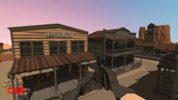
Tür: Oyun Motoru
Dil: C++
Çıkış Yılı: 2018
Nedir: Engin Manap isimli bir Türk önderliğinde geliştirilen FPS türünde oyunlar yapmak üzere geliştirilmiş bir 3D oyun motorudur.
Platformlar: Linux, Windows, Mac OSX
Lisanslama: LGPL
Web Sitesi: http://limonengine.com/
Topluluk: https://github.com/enginmanap/limonEngine/issues
Smile Game Builder

Tür: Oyun Yapma Oyunu
Çıkış Yılı: 2016
Nedir: Windows için herhangi bir programlama yapmadan RPG türünde oyunlar yapmanızı sağlayan bir motordur.
Platformlar: Windows
Lisanslama: Commercial
Web Sitesi: http://smilegamebuilder.com/en/
Topluluk: https://www.facebook.com/smilegamebuilder/
BABYLON.js
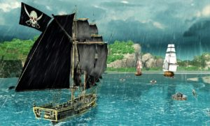
Tür: Geliştirme Kütüphanesi
Dil: JavaScript
Çıkış Yılı: 2013
Nedir: Çapraz platform oyunlar tasarlamak için bir geliştirme kütüphanesidir.
Platformlar: Windows, Mac, Linux, VR, AR, Web, iOS, Android, XONE
Lisanslama: MIT
Web Sitesi: https://www.babylonjs.com/
Topluluk: https://forum.babylonjs.com/
Intersect Engine
Tür: Oyun Motoru
Dil: C#
Nedir: Intersect 2D MMORPG yapmak için üretilmiş bir oyun motorudur.
Platformlar: Windows
Lisanslama: GPL
Web Sitesi: https://www.freemmorpgmaker.com/
Topluluk: https://www.ascensiongamedev.com/
Leadwerks Engine

Tür: Oyun Motoru
Dil: C++, Lua
Çıkış Yılı: 2014
Nedir: Leadwerks 3D oyunlar tasarlamanızı kolaylaştıracak bir oyun motorudur.
Platformlar: Windows, Linux
Lisanslama: Commercial
Web Sitesi: https://www.leadwerks.com/
Topluluk: https://www.leadwerks.com/community/
M.U.G.E.N
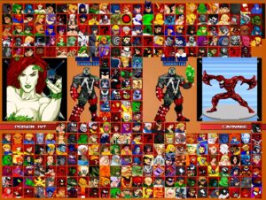
Tür: Oyun Yapma Oyunu
Çıkış Yılı: 2001
Nedir: Bu zamana kadar pek çok M.U.G.E.N oyunuyla karşılaşmış olduğunuza eminim. Aslında 2D platform dövüş oyunu olarak tasarlanmış bir oyunu düzenliyor, kendi karakter, animasyon ve seslerinizi ekliyor gibisiniz.
Platformlar: Linux, Windows, DOS, XBOX, PS3
Lisanslama: GPL
Web Sitesi: http://www.elecbyte.com/mugendocs-11b1/mugen.html
HaxePunk Engine
Tür: Oyun Motoru
Dil: Haxe
Çıkış Yılı: 2011
Nedir: HaxePunk, FlashPunk oyun motoru üzerine bina edilmiş, çapraz platform oyunlar hazırlamak için yapılmış açık kaynaklı bir oyun motorudur.
Platformlar: Windows, Mac, Linux, Flash, iOS, iPad, Android, AndroidTab, AndroidConsole
Lisanslama: MIT
Web Sitesi: http://haxepunk.com/
Topluluk: http://forum.haxepunk.com/
Irrlicht 3D Engine


Tür: Oyun Motoru
Dil: C++, .NET
Çıkış Yılı: 2004
Nedir: Irrlicht Engine açık kaynaklı, yüksek performanslı, gerçek zamanlı 3D bir oyun motorudur. D3D, OpenGL ve kendi render yazılımıyla çalışır ve çapraz platformludur.
Platformlar: Linux, Windows, Mac OSX
Lisanslama: GPL
Web Sitesi: http://irrlicht.sourceforge.net/
Topluluk: http://irrlicht.sourceforge.net/forum/
INSTEAD3 Engine

Tür: Oyun Motoru
Dil: Lua
Çıkış Yılı: 2014
Nedir: Asıl amacı görsel roman, yazı tabanlı oyunlar yapmak olan bir oyun motorudur, fakat 2D oyunlar geliştirmek için de kullanılabilir. Çapraz platform ve ücretsizdir.
Platformlar: Windows, Mac, Linux, Web, iOS, iPad, Android
Lisanslama: MIT
Web Sitesi: https://instead3.syscall.ru/en/
Topluluk: https://www.moddb.com/engines/instead/articles
Lumix Engine
Tür: Oyun Motoru
Dil: Lua
Çıkış Yılı: 2014
Nedir: Lumix Engine açık kaynaklı, eklenti tabanlı, 3D oyun motorudur. Kullanıcı dostu bir arayüzü vardır.
Platformlar: Linux, Windows
Lisanslama: MIT
Web Sitesi: https://mikulasflorek.itch.io/lumix-engine
Topluluk: https://github.com/nem0/lumixengine/issues
3D GameStudio A8
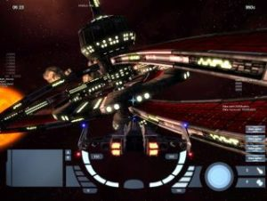
Tür: Oyun Motoru
Dil: lite-C
Çıkış Yılı: 2010
Nedir: Birden fazla modülden oluşan bir 3D oyun motorudur. SüperCan, KABUS 22, C4 ROBOT gibi oyunlar bu oyun motoruyla yapılmıştır.
Platformlar: Windows
Lisanslama: Commercial
Web Sitesi: http://www.3dgamestudio.com/
Topluluk: https://opserver.de/ubb7/
Run3 Engine

Tür: Oyun Motoru
Dil: Lua
Çıkış Yılı: 2017
Nedir: FPS tarzı oyunlar geliştirmek için yapılmış 3d oyun motorudur.
Platformlar: Windows
Lisanslama: MIT
Web Sitesi: https://sgl-team.3dn.ru/index/run3_game_engine/0-4
Topluluk: https://sgl-team.3dn.ru/forum/
PlayCanvas Engine

Tür: Oyun Motoru
Dil: JavaScript
Çıkış Yılı: 2013
Nedir: Tamamen tarayıcıda WebGL sayesinde çalışan 3D oyun motorudur.
Platformlar: Windows, Mac, Linux, Web, Mobile, iOS, iPad, Android, AndroidTab, AndroidConsole, Metro, MetroTab
Lisanslama: Commercial
Web Sitesi: https://playcanvas.com/
Topluluk: https://forum.playcanvas.com/
CryENGINE
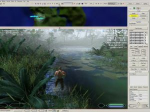
Tür: Oyun Motoru
Dil: Lua
Çıkış Yılı: 2004
Nedir: Grafiksel anlamda geliştiriciye büyük kolaylık sağlayan, 3D oyunlar yapmak için tasarlanmış bir oyun motorudur.
Platformlar: Windows
Lisanslama: Commercial
Web Sitesi: https://www.cryengine.com/
Topluluk: https://forum.cryengine.com/
Eclipse Origins
**Tür: ** Oyun Motoru
Çıkış Yılı: 2013
Nedir: 2D Online RPG türünde oyunlar yapmak için tasarlanmış bir oyun motorudur. Halihazırda bir oyun olarak gelen Eclipse Origins’I düzenleyerek kendi online oyununuzu oluşturursunuz. XtremeWolrds motoruna aşırı derecede benzemektedir.
Platformlar: Windows
Lisanslama: Commercial
Web Sitesi: https://www.eclipseorigins.com/
LANCE
 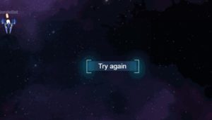
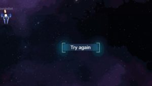
Tür: Geliştirme Kütüphanesi
Dil: JavaScript
Çıkış Yılı: 2017
Nedir: Lance NODE.js tabanlı bir oyun sunucusudur. Geliştiricilerin üzerinden networking yükünü almak için tasarlanmıştır.
Platformlar: VR, Web
Lisanslama: MIT
Web Sitesi: http://lance.gg/
Topluluk: https://stackoverflow.com/questions/tagged/lance
BYOND (Dream Maker)

Tür: Oyun Motoru
Dil: Dream Maker
Çıkış Yılı: 2000
Nedir: Dream Maker, BYOND platformunda 2D multiplayer oyunlar geliştirmek için oluşturulmuş bir programlama dilidir. BYOND hem oyun motoru hem de oyunların paylaşıldığı çalıştırma ortamıdır.
Platformlar: Linux, Windows, Mac OSX
Lisanslama: Public Domain
Web Sitesi: http://www.byond.com/
Topluluk: http://www.byond.com/forum/
Div GO Engine

Tür: Oyun Motoru
Dil: Özelleştirilmiş
Çıkış Yılı: 2015
Nedir: Tarayıcınız üzerinden 2D veya 3D oyun yapmanızı sağlayan bir oyun motorudur.
Platformlar: Linux, Windows, Mac OSX, Web
Lisanslama: MIT
Web Sitesi: https://www.divgo.net/
Topluluk: https://forum.bennugd.org/index.php?board=103.0
Kivy

Tür: Geliştirme Kütüphanesi
Dil: Python
Çıkış Yılı: 2011
Nedir: Kivy, gösrel olarak istediğinizi tasarlayabileceğiniz, çok platformlu bir Python kütüphanesidir.
Platformlar: Windows, Mac, Linux, iOS, Android
Lisanslama: MIT
Web Sitesi: https://kivy.org/#home
Topluluk: https://www.facebook.com/kivyframework
IMPACT JS
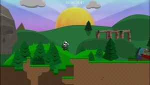
Tür: Oyun Motoru
Dil: JavaScript
Çıkış Yılı: 2011
Nedir: Impact JS masaüstü veya mobil tarayıcılar için HTML5 oyunlar yapmanızı sağlayan bir oyun motorudur.
Platformlar: Windows, Mac, Linux, Web, Mobile, iOS, iPad, Android, AndroidTab, AndroidConsole, WiiU, Wii
Lisanslama: Commercial
Web Sitesi: https://impactjs.com/
Topluluk: https://impactjs.com/forums
Xenko Engine
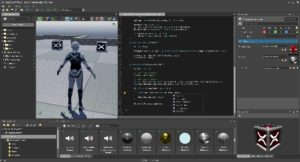
Tür: Oyun Motoru
Dil: C#
Çıkış Yılı: 2014
Nedir: Xenko çapraz platform bir 3D oyun motorudur. Grafiksel anlamda sağladığı destek ve kullanıcı dostu arayüze sahiptir.
Platformlar: Windows, iOS, iPad, Android
Lisanslama: Proprietary
Web Sitesi: https://xenko.com/
Topluluk: https://xenko.com/community/
DarkBASIC Professional Engine
Tür: Oyun Motoru
Dil: BASIC
Çıkış Yılı: 2004
Nedir: BASIC diliyle 3D oyunlar yapabileceğiniz bir oyun motoru kütüphanesidir.
Platformlar: Windows
Lisanslama: Commercial
Web Sitesi: https://www.thegamecreators.com/product/dark-basic-pro-open-source
Topluluk: https://github.com/TheGameCreators/Dark-Basic-Pro/issues
NeoAxis Engine
Tür: Oyun Motoru
Dil: C#, Görsel
Çıkış Yılı: 2006
Nedir: 3D oyun yapımına yönelik hazırlanmış, güncel bir oyun motorudur.
Platformlar: Windows, Mac OSX
Lisanslama: Proprietary
Web Sitesi: https://www.neoaxis.com/
Topluluk: https://www.neoaxis.com/community_hub
Ambrose3D Engine
Tür: Oyun Motoru
Dil: C/C++
Çıkış Yılı: 2007
Nedir: OpenGL ve SDL tabanlı basit ama işe yarar bir 3D oyun motorudur.
Platformlar: Linux, Windows, Mac OSX
Lisanslama: GPL
Web Sitesi: http://sol.gfxile.net/ambrose3d/
CorEngine
Tür: Oyun Motoru
Dil: Lua/C
Çıkış Yılı: 2014
Nedir: OpenGL kullanan bir 3D oyun motorudur.
Platformlar: Windows
Lisanslama: LGPL
Web Sitesi: http://corengine.sourceforge.net/
Topluluk: https://sourceforge.net/p/corengine/forum/
GamePlay 3D

Tür: Geliştirme Kütüphanesi
Dil: C++
Çıkış Yılı: 2011
Nedir: Açık kaynaklı, çapraz platform 2D ve 3D oyun geliştirme kütüphanesidir.
Platformlar: Windows, Mac, Linux, iOS, iPad, Android
Lisanslama: Public Domain
Web Sitesi: http://gameplay3d.org/
Topluluk: http://gameplay3d.org/forums/
Adventure Game Engine
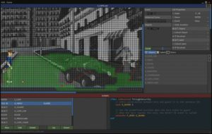
Tür: Oyun Motoru
Dil: Görsel
Çıkış Yılı: 2012
Nedir: Adventure Game Engine, Macera(Adventure) türünde oyunlar yapmak için geliştirilmiş çapraz platform bir oyun motorudur.
Platformlar: Windows, Mac, Linux, iOS, iPad, Android
Lisanslama: Proprietary
Web Sitesi: http://www.seccia.com/software#age
Topluluk: https://steamcommunity.com/app/848340
Flowlab Engine

Tür: Oyun Motoru
Dil: Görsel
Çıkış Yılı: 2012
Nedir: Çapraz platform bir oyun motorudur. Programlama dili yerine görsel ve ilişkisel bir arayüz kullanır.
Platformlar: Windows, Mac, Linux, Web, Flash, Mobile, Android
Lisanslama: Proprietary
Web Sitesi: http://flowlab.io/
Topluluk: http://forum.flowlab.io/sso
Hero Engine

Tür: Oyun Motoru
Dil: HeroScript Language(HSL)
Çıkış Yılı: 2012
Nedir: 3D MMO oyunları üretmek için geliştirlmiş bir oyun motorudur.
Platformlar: Windows
Lisanslama: Proprietary
Web Sitesi: http://www.heroengine.com/
Topluluk: http://hewiki.heroengine.com/wiki/Main_Page
jMonkey Engine
Tür: Oyun Motoru
Dil: Java
Çıkış Yılı: 2009
Nedir: Java için, çapraz platform olan bir 3D oyun motorudur.
Platformlar: Windows, Mac, Linux, VR, iOS, iPad, Android, AndroidTab, AndroidConsole
Lisanslama: BSD
Web Sitesi: https://jmonkeyengine.org/
Topluluk: https://hub.jmonkeyengine.org/
Ogre Engine

Tür: 3D Grafik Motoru
Dil: C++
Çıkış Yılı: 2005
Nedir: Ogre 3D oyunlar da yapabileceğiniz bir grafik motorudur.
Platformlar: Linux, Windows, Mac OSX
Lisanslama: MIT
Web Sitesi: https://www.ogre3d.org/
Topluluk: https://forums.ogre3d.org/
Panda3D Engine
Tür: Oyun Motoru
Dil: C++, Python
Çıkış Yılı: 2002
Nedir: Panda3D, bir oyun motoru, framework ve 3D render yazılımıdır. Açık kaynaklı ve tamamen ücretsizdir.
Platformlar: Linux, Windows, Mac OSX
Lisanslama: BSD
Web Sitesi: https://www.panda3d.org/
Topluluk: https://discourse.panda3d.org/
Retribution Engine
Tür: Oyun Motoru
Dil: C++
Çıkış Yılı: 2012
Nedir: Ücretsiz, FPS oyun yapımı için geliştirlmiş bir motordur.
Platformlar: Windows
Lisanslama: GPL
Web Sitesi: http://www.apgardner.karoo.net/retrib/index.html
Topluluk: https://sourceforge.net/p/retribengine/discussion/
Adventure Game Studio (AGS)
Tür: Oyun Yapma Oyunu
Dil: Yok
Çıkış Yılı: 2009
Nedir: Açık kaynaklı Macera(Adventure) türünd eoyunlar yapmanızı ciddi anlamda kolaylaştıran bir oyun yapma oyunudur.
Platformlar: Linux, Windows, Mac OSX
Lisanslama: Public Domain
Web Sitesi: https://www.adventuregamestudio.co.uk/
Topluluk: https://www.adventuregamestudio.co.uk/site/community/
Game Maker (Game Maker Studio)
Tür: Oyun Motoru
Dil: Gaem Maker Language (GML)
Çıkış Yılı: 1999
Nedir: Game Maker, hafif, 2D ve 3D oyunlar geliştirebileceğiniz. Çapraz platform desteği bulunan, kendi özelleştirilmiş dili bulunan bir oyun motorudur.
Platformlar: Windows, Mac, Linux, VR, AR, Web, iOS, Android, Metro, XONE, PS4, PS3, VITA
Lisanslama: Commercial
Web Sitesi: https://www.yoyogames.com/
Topluluk: https://www.yoyogames.com/community
Unity3D Engine
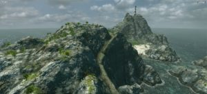
Tür: Oyun Motoru
Dil: Görsel, C#, UnityScript(Unity JavaScript benzeri dili)
Çıkış Yılı: 2005
Nedir: Unity 3D, hem 2D hem de 3D oyunlar yapabileceğiniz, çok güçlü bir topluluğu olan, çapraz platform oyunlar geliştirebileceğiniz oyun motorudur.
Platformlar: Windows, Mac, Linux, VR, AR, Web, Flash, iOS, iPad, Android, X360, PS3, WiiU, Wii
Lisanslama: Commercial
Web Sitesi: https://unity.com/products
Topluluk: https://unity.com/community
Unreal Engine 4
Tür: Oyun Motoru
Dil: Görsel (Blueprint), C++
Çıkış Yılı: 2014
Nedir: Unreal Engine 4, 2D veya 3D oyunlar geliştirebileceğiniz, çok güçlü bir topluluğu olan, çapraz platform oyun motorudur. Görsel programlama yapısı pek çok motora göre daha gelişmiştir.
Platformlar: Windows, Mac, Linux, VR, AR, iOS, XONE, X360, PS4, PS3
Lisanslama: Commercial
Web Sitesi: https://www.unrealengine.com/en-US/
Topluluk: https://forums.unrealengine.com/
Godot Engine

Tür: Oyun Motoru
Dil: GDScript (Python’a benzer bir dildir), C++, C#, Rust, Nim, D
Çıkış Yılı: 2014
Nedir: Godot Engine, tamamen ücretsiz, 2D ve 3D oyunlar geliştirebileceğiniz, güçlü bir topluluğu olan, çapraz platform oyun motorudur.
Platformlar: Windows, Mac, Linux, Web, iOS, iPad, Android, AndroidTab, PS4, PS3, VITA
Lisanslama: MIT
Web Sitesi: https://godotengine.org/
Topluluk: https://godotengine.org/community
FPS Creator (FPSC)

Tür: Oyun Yapma Oyunu
Dil: FPI(Özelleştirilmiş, basit bir dil)
Çıkış Yılı: 2005
Nedir: Eskiden ücretli bir yazılım olan FPS Creator, bir süre sonar TheGameCreators tarafından ücretsiz olarak dağıtıldı. Tüm amacı 3D FPS oyunları hazırlanılabilmesi. Normade yazılımdaki objeleri bir level editörde yerleştirip oyun olarak çıktı alıyorsunuz, fakat siz de objeler ve aktörler için kendi scriptlerinizi yazabilir, kendi materyallerinizi ve objelerinizi yerleştirip bir nevi kısıtlı bir oyun motoru olarak kullanabilirsiniz.
Platformlar: Windows
Lisanslama: (Yazılımı indirmek ve yapilan oyunların satılması serbest)
Web Sitesi: https://www.thegamecreators.com/product/fps-creator-classic-open-source
Topluluk: https://forum.thegamecreators.com/
Source SDK
Tür: Oyun Motoru
Dil: C++, VScript
Çıkış Yılı: 2004
Nedir: Left 4 Dead, Half Life 2 gibi oyunların yapımında kullanılmış ve oyun yapımcılar için kullanıma açılmış bir SDK’dır. 3D oyunlar yapmaya yönelik tasarlanmıştır.
Platformlar: Windows, Mac, Linux, VR
Lisanslama: Commercial
Web Sitesi: https://developer.valvesoftware.com/wiki/SDK_Installation
Topluluk: https://steamcommunity.com/app/211
S2ENGINE
Tür: Oyun Motoru
Dil: Görsel
Çıkış Yılı: 2011
Nedir: S2ENGINE, 3D oyunlar geliştirmek için bir oyun motorudur. Görsel programlama scripti ile oyun geliştirmek kolaylaştırılmıştır. Tek seferlik ucuz bir ücret ödedikten sonra oyunlarınızı geliştirebilir, lisans sorunu yaşamadan paylaşabilirsiniz. Steam üzerinden satışı yapılmaktadır.
Platformlar: Windows
Lisanslama: Commercial
Web Sitesi: https://store.steampowered.com/app/443970/S2ENGINE_HD/?l=turkish
Topluluk: https://steamcommunity.com/app/443970
libGDX

Tür: Geliştirme Kütüphanesi
Dil: Java
Çıkış Yılı: 2009
Nedir: libGDX bir Java oyun geliştirme frameworkudur. Çapraz platform desteği vardır, hem 2D, hemde 3D oyunlar geliştirilmesine olanak sağlar.
Platformlar: Windows, Mac, Linux, iOS, iPad, Android, AndroidTab
Lisanslama: Commercial
Web Sitesi: https://libgdx.badlogicgames.com/
Topluluk: https://libgdx.badlogicgames.com/community.html
GameGuru


Tür: Oyun Yapma Oyunu
Dil: Lua
Çıkış Yılı: 2015
Nedir: GameGuru’yu FPSCreator’un yeni versiyonu gibi düşünün. Hiç programlama yapmadan kendi 3D oyununuzu oluşturabilirsiniz. Lua dili ile bu programı bir oyun motoru olarak kullanma şansınız da var.
Platformlar: Windows
Lisanslama: Commercial
Web Sitesi: https://www.game-guru.com/
Topluluk: https://forum.game-guru.com/
AppGameKit Engine
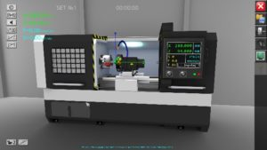
Tür: Oyun Motoru
Dil: BASIC
Çıkış Yılı: 2011
Nedir: Yeni başlayanlar için alışması kolay, 2D ve 3D oyunlar yapabileceğiniz, çapraz platform bir oyun motorudur.
Platformlar: Windows, Mac, Linux, VR, Web, iOS, Android
Lisanslama: Commercial
Web Sitesi: https://www.appgamekit.com/
Topluluk: https://forum.thegamecreators.com/
MonoGame
Tür: Geliştirme Kütüphanesi
Dil: C#
Çıkış Yılı: 2009
Nedir: Çapraz platform oyunlar yapabileceğiniz, XNA üzerine geliştirlmiş bir geliştirme kütüphanesidir.
Platformlar: Windows, Mac, Linux, iOS, Android, Metro, XONE, PS4, VITA, Switch
Lisanslama: BSD
Web Sitesi: https://www.monogame.net/
Topluluk: https://community.monogame.net/
Yukarıda belirttiğimiz oyun motorları dışında aşağıdakiler de görülmeye değerdir.
Diğer Çalışmalar
PrBoom: Yıllardır geliştirilen Doom kaynak kodu üzerine geliştirilmiş, Boom olarak da bilinen çalışmanın üzerine geliştirilmiş çalışma. Web Sitesi: http://prboom.sourceforge.net/
DarkPlaces: Quake Motoru üzerine yapılmış, grafisel, format desteği, bağlantı kütüphaneleri açısından geliştirilmiş QuakeC programlama dili ile script yazabildiğiniz bir eklenti. Web Sitesi: https://www.moddb.com/engines/darkplaces-engine/downloads
CUBE (Cube, Cube 2: Sauerbraten): Sahte 3D, tek ve çok oyunucu seçenekleri olan bir oyuna obje ekleyip çıkararak oyun tasarlıyorsunuz. Yani prensip olarak bir oyun yapma oyunu. Web Sitesi: http://cubeengine.com/
Raycasting Game Maker: Sahte 3D oyunlar oluşturmak için, açık kaynaklı bir oyun motoru. Web Sitesi: https://www.moddb.com/engines/raycasting-game-maker
3D Rad: Windows platformuna 3D oyunlar hazırlayabileceğiniz bir SDK. Web sitesi artık yok, şu adresten ulaşabilirsiniz: https://www.moddb.com/engines/3d-rad
Lugdunon: Editleyip kendi oyununuza çevirebileceğiniz bir online RPG oyunu. Web sitesi: https://lugdunon.net/
Stratagus: RTS türünde oyunlar yapabilmeniz için üretilmiş bir oyun motorudur. GPL lisanslaması altındadır. Web Sitesi: http://stratagus.sourceforge.net/
Daedalus: Çeşitli labirentler oluşturmak için oluşturulmuş bir motordur, kendine özgü bir dili de vardır. Web Sitesi: http://www.astrolog.org/labyrnth/daedalus.htm
ZetaGlest: ZetaGlest gerçek zamanlı, online strateji oyunları yapmak için yapılmış bir oyun motorudur. MegaGlest oyunu üzerine geliştirilen bir projedir. Web Sitesi: https://zetaglest.github.io/docs/
TES3MP: TES3MP, OpenMW üzerinde çok oyunculu desteği sağlayan bir eklenti modülüdür. GPL lisanslamaya sahiptir. Web Sitesi: https://tes3mp.com/
Colyseus: Colyseus, Node.js için bir Multiplayer Oyun Sunucusudur, asıl amacı oyun geliştiricilerinin networking yükünü almaktır. MIT Lisanslamasına sahiptir. Web Sitesi: https://colyseus.io/
Game Develop: Açık kaynaklı, çapraz platform, öğrenimi kolay bir 2d oyun yapma oyunudur. Web Sitesi: https://gdevelop-app.com/
Wintermute Engine: 2D ve 3D Macrea(Adventure) türünde oyunlar oluşturmak için yapılmış bir oyun motorudur. Web Sitesi: http://dead-code.org/home/
Unigine 2: Daha çok simülasyon yapımına yönelmiş 3D gerçek zamanlı bir oyun motorudur. Web Sitesi: https://unigine.com/
The Game Pencil Engine: Çapraz platform, açık kaynaklı bir oyun motorudur. Web Sitesi: https://pawbyte.com/gamepencilengine/
Torque Game Engine: 3D ve 2D olmak üzere iki ayrı geliştirme ortamı olan oyun motorudur. Web Sitesi: http://www.garagegames.com/
Houdini Engine: Öğrenciler ve hobi için kullananlara ücretsiz olarak verilen 3D oyun motorudur. Neredeyse bütün güncel platformlara çıktı alabilirsiniz. Web Sitesi: https://www.sidefx.com/
Delta3D: Amerikan Naval Postgraduate Okulu’ tarafından geliştirilmiş bir 3d oyun motorudur. Açık aynaklıdır ve LGPL lisanslaması mevcuttur. Web Sitesi: https://github.com/delta3d/delta3d
Epee Engine: SDL ve Tinyxml kullanan 2D oyunlar geliştirmek için kullanılan ücretsiz bir motor. Web Sitesi: http://epeeengine.org/
Eternity Engine: Doom tabanlı bir motordur. Web Sitesi: https://github.com/team-eternity/eternity
Exult: Ultima tarsi oyunlar yapabileceğiniz bir motordur. Web Sitesi: http://exult.sourceforge.net/
FIFE Engine: Açik kaynaklı, çapraz platform, izometrik oyunlar yapmak için tasarlanan bir oyun motorudur. Web Sitesi: https://www.fifengine.net/
GemRB: Bioware’nin Infinity Engine’inin açık kaynaklı implementasyonudur. Web Sitesi: http://www.gemrb.org/wiki/doku.php?id=start
Horde3D: Açık kaynaklı, küçük bir 3D render motorudur. Web Sitesi: http://www.horde3d.org/
KonsolScript: 2005 yılından beri geliştirilen birçapraz platform oyun programlama dilidir. Web Sitesi: http://konsolscript.sourceforge.net/web/
Nebula Device: Alman firması Radon Labs tarafındna geliştirilmiş 3D oyun motorudur. Web Sitesi: https://sourceforge.net/projects/nebuladevice/
PLIB: C/C++ kullanan ücretsiz bir 3D oyun motorudur. Web Sitesi: http://plib.sourceforge.net/
vbGORE: Açık kaynaklı, 2D online RPG oyunları hazırlamanız için yapılmış bir motordur. Web Sitesi: http://www.vbgore.com/Main_Page
Baja Engine: 2D/3D oyunlar yapabileceğiniz, BSD lisanslı oyun motorudur. Web Sitesi: http://www.bajaengine.com/
Daybreak motor: Sahne yönelimli, esnek bir 3D oyun motorudur. XNA framework kullanır. Web Sitesi: https://archive.codeplex.com/?p=dbm
FlatRedBall: 2D oyunlar geliştirmek için, cross platform bir oyun motorudur. Web Sitesi: http://flatredball.com/
Pentagram: Ultima benzeri oyunlar yapmak için tapılmış üzretsiz bir proje. Web Sitesi: http://pentagram.sourceforge.net/
Clickteam Fusion: Multimedia Fusion motorunun güncel hali, 2D oyunlar geliştirmek için tasarlanmış bir motor. Web Sitesi: https://www.clickteam.com/
Stencyl: 2D oyunlar yapmak için geliştirilmiş bir motor. Web Sitesi: http://www.stencyl.com/
Slick2D: 2D oyunlar yapmak için geliştirilmiş bir Java oyun kütüphanesidir. Web Sitesi: https://slick.ninjacave.com/
Imperial Game Engine 2.5: 3D oyunlar geliştirmek için tasarlanılmış bir oyun motorudur, güncel değildir. Web Sitesi: https://www.moddb.com/engines/imperial-game-engine-25
Visionaire Studio: Macera(Adventure) türünde oyunlar geliştirmek için bir oyun motorudur. Web Sitesi: https://www.visionaire-studio.net/
Urho3D: OGRE ve Horde3D motorlarından esinlenerek yapılmış 2D ve 3D oyun motoru. MIT lisanslamasına sahip. Web Sitesi: https://urho3d.github.io/
Phaser: MIT lisanslamasına sahip, çapraz platform 2D oyunlar yapmak için hazırlanmış bir framework. Web Sitesi: http://phaser.io/
Twine: GPL lisanslamasına sahip, etkileşimli hikayeler oluşturmak için geliştirilmiş bir motor. Web Sitesi: https://twinery.org/
SugarBombEngine: OpenMW ve id Tech 4 kaynakları üzerinden geliştirilmiş, GPL lisanslamasına sahip bir çalışma. Web Sitesi: https://github.com/BlackPhrase/SugarBombEngine
Corona Labs Engine: 2D oyun geliştirmek için çapraz platform bir oyun motorudur. Web Sitesi: https://coronalabs.com/
XNA: Microsoft’un geliştirdiği meşhur ve güncel bir geliştirme kütüphanesidir. Web Sitesi: https://www.microsoft.com/en-us/download/details.aspx?id=23714
Three.js: 2D ve 3D oyunlar yapabileceğiniz, bir JavaScript kütüphanesidir. Web Sitesi: https://threejs.org/
O.H.R.RPG.C.E.: GPL lisanslamasına sahip 2D RPG oyunlar yapmanız için bir oyun motorudur. Web Sitesi: http://rpg.hamsterrepublic.com/ohrrpgce/Main_Page
Blender Game Engine: Blender, GPL lisanslamasına sahip bir 3D modelleme, render, animasyon programı olmasıyla birlikte aynı zamanda bir oyun motorudur. Görselleştirilmiş dili yanında, Python da kullanabilirsiniz. Web Sitesi: https://www.blender.org/